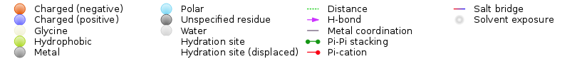

Ligand Interaction Diagram Panel
This panel allows you to generate and display a 2D diagram of the interactions between a ligand and various protein residues.
Using the Ligand Interaction Diagram Panel
The Ligand Interaction Diagram displays interactions between a single ligand and a protein receptor. The ligand and receptor must be included in the Workspace. If you include more than one ligand, the available ligands are listed on the Ligand option menu, and you can choose which one you want to display.
The distances and angles that determine the interactions displayed are:
- Hydrogen bonds: The maximum distance is 2.5 Å; the minimum donor angle is 120.0°, and the minimum acceptor angle is 90.0°. These values are consistent with the default values that are used in Maestro.
- Salt bridge: Salt bridges are defined by oppositely-charged atoms that are within 5 Å and are not directly hydrogen-bonded.
- Pi-pi stacking: A pi-pi interaction is defined as an interaction between two aromatic rings in which either (a) the angle between the ring planes is less than 30° and the distance between the ring centroids is less than 4.4 Å (face-to-face), or (b) the angle between the ring planes is greater than 60° and the distance between the ring centroids is less than 5.5 Å (edge-to-face).
- Pi-cation interaction: The maximum distance between the cation center and the ring center is 6.6 Å; and the angle between the ring plane and the line between the cation center and the ring center is greater than 60°.
- Metal-coordination: The maximum distance between the metal and the ligating atom is 2.5 Å.
Ligand Interaction Diagram Panel Features
Menu bar
- File menu
-
- Save Screenshot (Ctrl+Alt+P, ⌥⌘P)
-
Save an image of the structure in a file. The image can be saved in PNG, JPG, or BMP format.
- Close (Ctrl+W, ⌘W)
-
Close the window.
- Edit menu
-
- Preferences
-
Set display preferences. Opens a Preferences panel, in which you can make settings. In the General tab you can make settings for the drawing of the structure and the background; in the Selection tab you can make settings for the selection of atoms in the structure, and in the Ligand Interaction Diagram tab, you can make settings for the representation of objects in the Ligand Interaction Diagram.
- Undo (Ctrl+Z, ⌘Z)
-
Undo the last action. Can be performed multiple times. Same as the toolbar button.
- Redo
-
Redo the last action that was undone. Can be performed multiple times. Same as the toolbar button.
- Copy (Ctrl+C, ⌘C)
-
Copy the selected atoms (or the entire structure, if there is no selection) to the clipboard as a SMILES string.
- Paste (Ctrl+V, ⌘V)
-
Paste the SMILES string from the clipboard onto the drawing area as a 2D structure. The structure is placed in the center of the drawing area.
- Select All (Ctrl+A, ⌘A)
-
Select all atoms in the structure. The atoms are outlined in yellow.
- Deselect (Ctrl+D, ⌘D)
-
Clear the atom selection.
- Cleanup
-
Clean up the structure (2D coordinates) and normalize orientation and arrangement of groups. If you have atoms selected, only those atoms are cleaned up. Same as the toolbar button.
- Input SMILES String (Ctrl+S, ⌘S)
-
Specify a structure by using a SMILES string. Opens a dialog box, in which you can enter the SMILES string. When you click OK, the structure is added to the drawing area, at the center.
- Common or IUPAC Name Search (Ctrl+P, ⌘P)
-
Run a PubChem query (on the web) on the name provided and add the first result as a 2D structure to the drawing area, at the center. Opens a dialog box, in which you can enter the name.
- View menu
-
- Flip Vertical (Ctrl+Alt+F, ⌥⌘F)
-
Flip the structure from top to bottom.
- Flip Horizontal (Ctrl+Alt+H, ⌥⌘H)
-
Flip the structure from left to right.
- Fit to Screen (Ctrl+F, ⌘F)
-
Zoom in or out so that the structure fills the visible part of the drawing area.
- Blackboard View (Ctrl+I, ⌘I)
-
Display the structure in white on a black background, like drawing on a blackboard.
- Selection Display Mode (Ctrl+Alt+S, ⌥⌘S)
-
Cycle between four ways of displaying selections:
- wide selection contour
- narrow selection contour
- wide bond highlight
- narrow bond highlight
- Stereochemistry Labels (Ctrl+L, ⌘L)
-
Label chiral atoms with R or S.
- Color Heteroatoms (Ctrl+T, ⌘T)
-
Color atoms other than carbon (N is blue, O is red, S is yellow, and so on). If this option is deselected, all atoms are colored black if the background is white, or white if the background is black.
- Scene Title (Ctrl+T, ⌘T)
-
Display the title above the structure.
- LID Legend
-
When displaying a ligand interaction diagram, display the legend below the diagram.
- User defined fragments
-
Display the User-defined fragments toolbar. By default it is placed below the menu bar, but you can move it to another location. This toolbar contains custom fragments, which you can use for drawing structures.
Toolbars
The panel has two toolbars, which are dockable. One has controls for the structure itself and its relation to the Workspace structure; the other has buttons for working with the display.
-
Sync with 3D option—Select this option to synchronize the orientation of the diagram to the orientation of the Workspace structure. This option is turned off automatically when you modify the displayed diagram with the toolbar buttons.
-
Ligand option menu—Choose the ligand to display from this option menu.
-
Cutoff text box—Include residues that have any atoms within the specified distance of any ligand atoms in the diagram. If you change this value, the diagram is recalculated with the new residue set.
-
Feature options—These options allow you to select the features that are shown in the diagram. When the feature selection changes, the diagram is redrawn. There may be a short pause while the drawing area is updated.
The buttons for working with the display are described below:

|
Undo
Undo the last action. Can be performed multiple times. |

|
Redo
Redo the last action that was undone. Can be performed multiple times. |

|
Lasso
Select atoms by drawing around them ("lassoing"). The selected atoms can be moved, rotated, deleted, copied. |

|
Move
Move (translate) the selected atoms or the entire structure. Drag in the drawing area to move the structure. Drag the selection to move the selected atoms. (This is the default action for dragging a selection, so you do not need to click this button before dragging it.) You can also move the structure by dragging with the right mouse button. |
|
|
Rotate
Rotate the selected atoms or the entire structure. Drag in the drawing area to rotate the structure. The angle through which the structure has been rotated is displayed near the center of rotation while you are rotating it. If rotation does not seem to be working properly, check whether you have other structures in the drawing area that are not visible. You can also rotate the structure by dragging with the middle mouse button. |

|
Cleanup
Clean up the structure (2D coordinates) and normalize orientation and arrangement of groups. If you have atoms selected, only the selected atoms are cleaned up. |

|
Erase
Delete atoms or bonds. Clicking on a carbon atom deletes it; clicking on a non-carbon atom changes it back to carbon, then clicking again deletes it. Clicking on a bond removes one bond. |

|
Best 2D View
Draw the diagram with the best 2D orientation. |
Display Area
This area displays the diagram. The color scheme and symbols used for the residues, ligand, and interactions is shown in the legend, which you can display with View → LID Legend.

The ligand is displayed as a 2D structure. Residues are represented as colored teardrop shapes, labeled with the residue name and residue number, and colored according to their properties. The point on the teardrop shape is oriented in the direction of the side chain. The chain is represented as a black line connecting residues. Residues on this line that are not within the threshold distance are represented as black dots.
Interactions between the residues and the ligand are drawn as lines, colored by interaction type. Residues that are present but don't have a line drawn for an interaction are involved in nonspecific hydrophobic interactions with the ligand. The binding pocket is indicated by a line drawn around the ligand, colored by the color of the nearest residue. Solvent exposure is indicated on the ligand atoms, and by the break in the line drawn around the pocket.
Related Topics